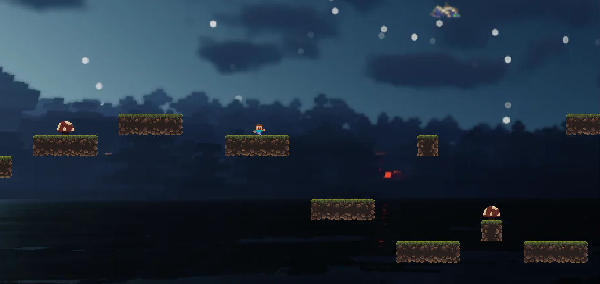
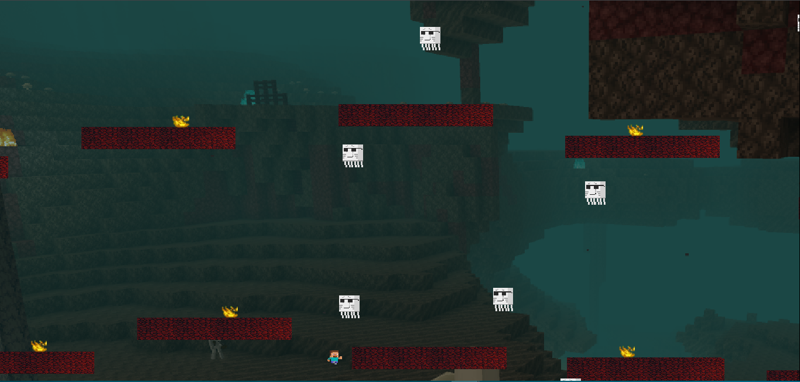
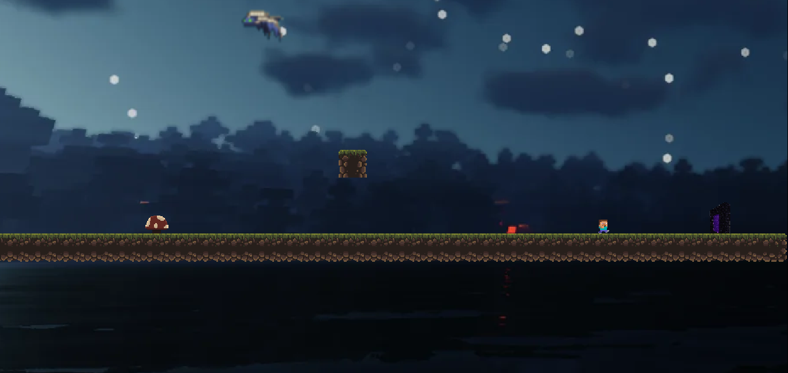
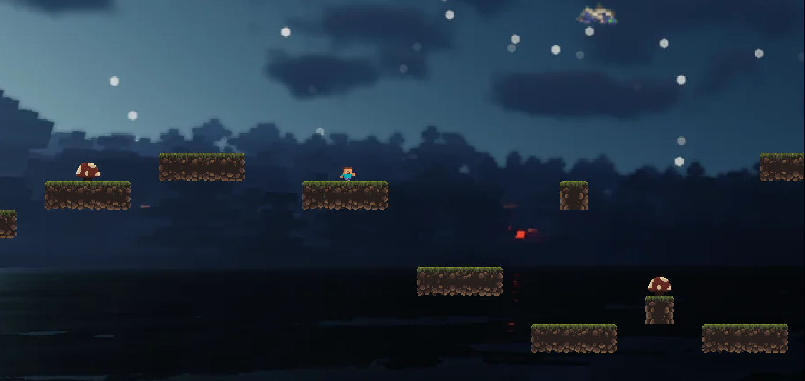
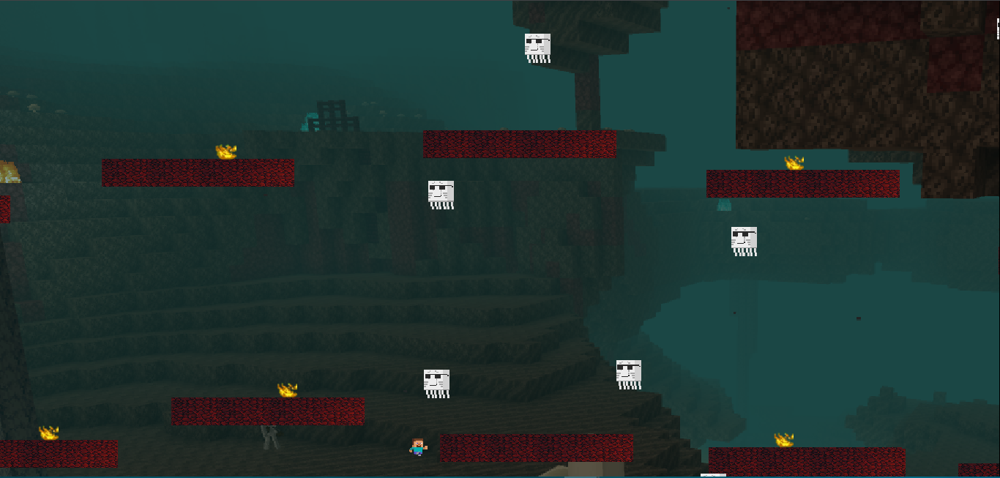
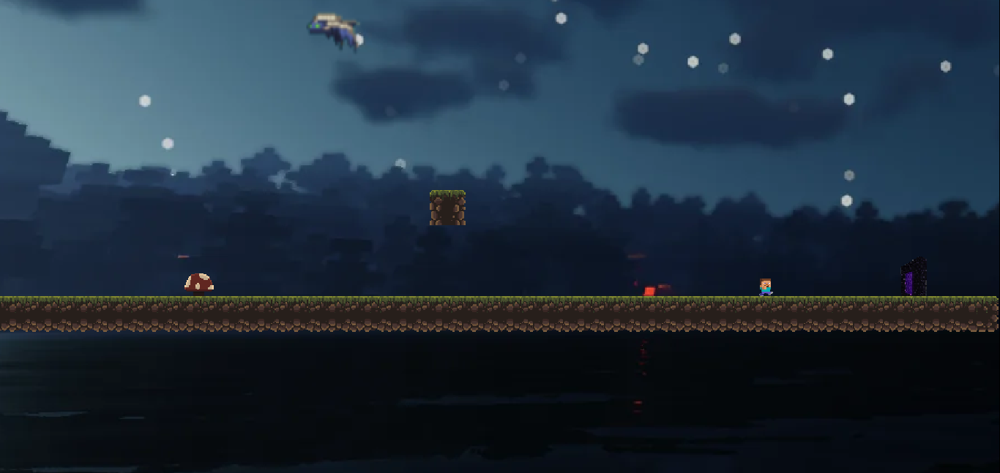

Agora, preso em duas dimensões, Steve corre contra o tempo para salvar Alex... e restaurar o mundo como ele era! Bem-vindo ao Mine Run.
Sobre o Jogo
O mundo era vasto, profundo, tridimensional. Steve e Alex — parceiros inseparáveis — protegiam a ordem natural do universo dos blocos.
Mas tudo mudou quando um portal misterioso foi aberto nas profundezas da Mina Central. Dele surgiu Null, uma entidade corrompida, esquecida nas linhas mais antigas do Código Base.
No momento da ruptura, Alex foi sugada pelo portal, e o mundo, antes 3D, colapsou em apenas duas dimensões. Agora, Steve está preso em um plano achatado, onde as leis da física foram reescritas e cada plataforma é um risco.
Em Mine Run, você assume o controle de Steve em uma jornada épica por mundos pixelados e instáveis. Pule entre blocos suspensos, enfrente criaturas distorcidas e corra contra o tempo para salvar Alex — e restaurar o mundo como ele era.
"Dois construtores. Um mundo quebrado. Um único caminho: em frente."
Galeria
 






Jogar
Preparado para correr pela sua vida? Não? Eu espero que sim! [...]
Play